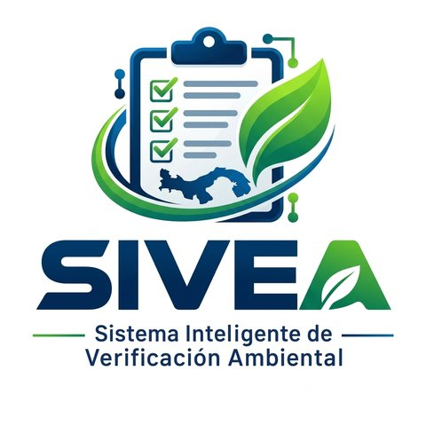

SIVEA, revisión de informe
Programa Saneamiento de Panamá
Sección SocioAmbiental
Sección SocioAmbiental
PROCEDIMIENTO ESPECIFICO SOCIO AMBIENTAL
Lista de Verificación de la Gestión Ambiental Mensual Contratista
Lista de Verificación de la Gestión Ambiental Mensual Contratista
Código: R-PA03-20
Edición: 0
Vigencia: 2025
Edición: 0
Vigencia: 2025
Tipo de Verificación: Mensual [√]
Tus respuestas se guardan en este equipo.
Más opciones
Editaste a mano la columna OBSERVACION. Si cambias los campos de abajo, se volverá a armar con ellos.
Dónde se confirma (opcional)

Arrastra aquí el informe en PDF
o elígelo desde tu equipo